这是学习笔记的第2138篇文章
GIF
千万级大表如何优化，这是一个很有技术含量的问题，通常我们的直觉思维都会跳转到拆分或者数据分区，在此我想做一些补充和梳理，想和大家做一些这方面的经验总结，也欢迎大家提出建议。
从一开始脑海里开始也是火光四现，到不断的自我批评，后来也参考了一些团队的经验，我整理了下面的大纲内容。
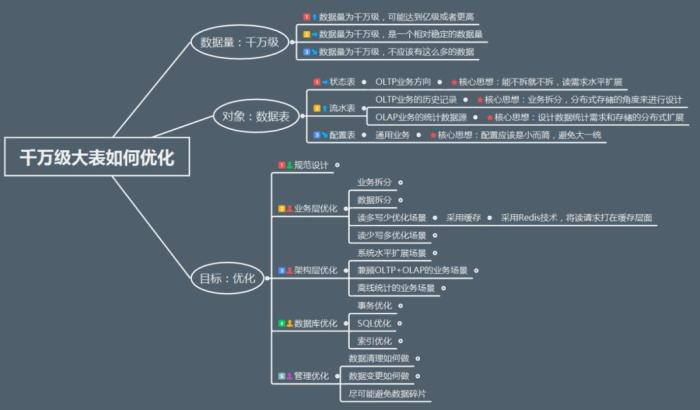
既然要吃透这个问题，我们势必要回到本源，我把这个问题分为三部分:
“千万级”，“大表”，“优化”，
也分别对应我们在图中标识的
“数据量”，“对象”和“目标”。
我来逐步展开说明一下，从而给出一系列的解决方案。
1.数据量：千万级
千万级其实只是一个感官的数字，就是我们印象中的数据量大。 这里我们需要把这个概念细化，因为随着业务和时间的变化，数据量也会有变化，我们应该是带着一种动态思维来审视这个指标，从而对于不同的场景我们应该有不同的处理策略。
1)数据量为千万级，可能达到亿级或者更高
通常是一些数据流水，日志记录的业务，里面的数据随着时间的增长会逐步增多，超过千万门槛是很容易的一件事情。
2)数据量为千万级，是一个相对稳定的数据量
如果数据量相对稳定，通常是在一些偏向于状态的数据，比如有1000万用户，那么这些用户的信息在表中都有相应的一行数据记录，随着业务的增长，这个量级相对是比较稳定的。
3)数据量为千万级，不应该有这么多的数据
这种情况是我们被动发现的居多，通常发现的时候已经晚了，比如你看到一个配置表，数据量上千万;或者说一些表里的数据已经存储了很久，99%的数据都属于过期数据或者垃圾数据。
数据量是一个整体的认识，我们需要对数据做更近一层的理解，这就可以引出第二个部分的内容。
2.对象：数据表
数据操作的过程就好比数据库中存在着多条管道，这些管道中都流淌着要处理的数据，这些数据的用处和归属是不一样的。
一般根据业务类型把数据分为三种：
（1）流水型数据
流水型数据是无状态的，多笔业务之间没有关联，每次业务过来的时候都会产生新的单据，比如交易流水、支付流水，只要能插入新单据就能完成业务，特点是后面的数据不依赖前面的数据，所有的数据按时间流水进入数据库。
（2）状态型数据
状态型数据是有状态的，多笔业务之间依赖于有状态的数据，而且要保证该数据的准确性，比如充值时必须要拿到原来的余额，才能支付成功。
（3）配置型数据
此类型数据数据量较小，而且结构简单，一般为静态数据，变化频率很低。
至此，我们可以对整体的背景有一个认识了，如果要做优化，其实要面对的是这样的3*3的矩阵，如果要考虑表的读写比例（读多写少，读少写多...），那么就会是3*3*4=24种，显然做穷举是不显示的，而且也完全没有必要，可以针对不同的数据存储特性和业务特点来指定不同的业务策略。
对此我们采取抓住重点的方式，把常见的一些优化思路梳理出来，尤其是里面的核心思想，也是我们整个优化设计的一把尺子，而难度决定了我们做这件事情的动力和风险。
数据量增长情况 | 数据表类型 | 业务特点 | 优化核心思想 | 优化难度 |
数据量为千万级，是一个相对稳定的数据量 | 状态表 | OLTP业务方向 | 能不拆就不拆读需求水平扩展 | **** |
数据量为千万级，可能达到亿级或者更高 | 流水表 | OLTP业务的历史记录 | 业务拆分，面向分布式存储设计 | **** |
OLAP业务统计数据源 | 设计数据统计需求存储的分布式扩展 | *** | ||
数据量为千万级，不应该有这么多的数据 | 配置表 | 通用业务 | 小而简，避免大一统 | * |
而对于优化方案，我想采用面向业务的维度来进行阐述。
3.目标：优化
在这个阶段，我们要说优化的方案了，总结的有点多，相对来说是比较全了。
整体分为五个部分：
其实我们通常所说的分库分表等方案只是其中的一小部分，如果展开之后就比较丰富了。
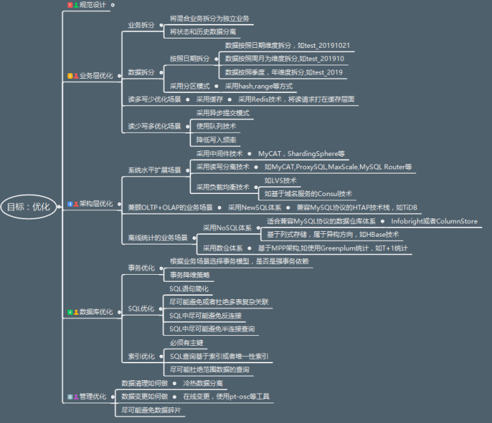
其实不难理解，我们要支撑的表数据量是千万级别，相对来说是比较大了，DBA要维护的表肯定不止一张，如何能够更好的管理，同时在业务发展中能够支撑扩展，同时保证性能，这是摆在我们面前的几座大山。
我们分别来说一下这五类改进方案：
优化设计方案1.规范设计
在此我们先提到的是规范设计，而不是其他高大上的设计方案。
黑格尔说：秩序是自由的第一条件。在分工协作的工作场景中尤其重要，否则团队之间互相牵制太多，问题多多。
规范设计我想提到如下的几个规范，其实只是属于开发规范的一部分内容，可以作为参考。
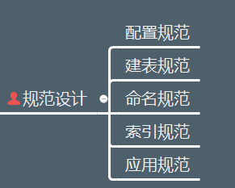
规范的本质不是解决问题，而是有效杜绝一些潜在问题，对于千万级大表要遵守的规范，我梳理了如下的一些细则，基本可以涵盖我们常见的一些设计和使用问题，比如表的字段设计不管三七二十一，都是varchar(500),其实是很不规范的一种实现方式，我们来展开说一下这几个规范。
1）配置规范
（1）MySQL数据库默认使用InnoDB存储引擎。
（2）保证字符集设置统一，MySQL数据库相关系统、数据库、表的字符集使都用UTF8，应用程序连接、展示等可以设置字符集的地方也都统一设置为UTF8字符集。
注：UTF8格式是存储不了表情类数据，需要使用UTF8MB4，可在MySQL字符集里面设置。在8.0中已经默认为UTF8MB4，可以根据公司的业务情况进行统一或者定制化设置。
（3）MySQL数据库的事务隔离级别默认为RR（Repeatable-Read），建议初始化时统一设置为RC（Read-Committed），对于OLTP业务更适合。
（4）数据库中的表要合理规划，控制单表数据量，对于MySQL数据库来说，建议单表记录数控制在2000W以内。
（5）MySQL实例下，数据库、表数量尽可能少；数据库一般不超过50个，每个数据库下，数据表数量一般不超过500个（包括分区表）。
2）建表规范
（1）InnoDB禁止使用外键约束，可以通过程序层面保证。
（2）存储精确浮点数必须使用DECIMAL替代FLOAT和DOUBLE。
（3）整型定义中无需定义显示宽度，比如：使用INT，而不是INT(4)。
（4）不建议使用ENUM类型，可使用TINYINT来代替。
（5）尽可能不使用TEXT、BLOB类型，如果必须使用，建议将过大字段或是不常用的描述型较大字段拆分到其他表中；另外，禁止用数据库存储图片或文件。
（6）存储年时使用YEAR(4)，不使用YEAR(2)。
（7）建议字段定义为NOT NULL。
（8）建议DBA提供SQL审核工具，建表规范性需要通过审核工具审核后
3）命名规范
（1）库、表、字段全部采用小写。
（2）库名、表名、字段名、索引名称均使用小写字母，并以“_”分割。
（3）库名、表名、字段名建议不超过12个字符。（库名、表名、字段名支持最多64个字符，但为了统一规范、易于辨识以及减少传输量，统一不超过12字符）
（4）库名、表名、字段名见名知意，不需要添加注释。
对于对象命名规范的一个简要总结如下表4-1所示，供参考。
命名列表
对象中文名称 | 对象英文全称 | MySQL对象简写 |
视图 | view | view_ |
函数 | function | func_ |
存储过程 | procedure | proc_ |
触发器 | trigger | trig_ |
普通索引 | index | idx_ |
唯一索引 | unique index | uniq_ |
主键索引 | primary key | pk_ |
4）索引规范
（1）索引建议命名规则：idx_col1_col2[_colN]、uniq_col1_col2[_colN]（如果字段过长建议采用缩写）。
（2）索引中的字段数建议不超过5个。
（3）单张表的索引个数控制在5个以内。
（4）InnoDB表一般都建议有主键列，尤其在高可用集群方案中是作为必须项的。
（5）建立复合索引时，优先将选择性高的字段放在前面。
（6）UPDATE、DELETE语句需要根据WHERE条件添加索引。
（7）不建议使用%前缀模糊查询，例如LIKE “%weibo”，无法用到索引，会导致全表扫描。
（8）合理利用覆盖索引，例如：
（9）SELECT email,uid FROM user_email WHERE uid=xx，如果uid不是主键，可以创建覆盖索引idx_uid_email(uid,email)来提高查询效率。
（10）避免在索引字段上使用函数，否则会导致查询时索引失效。
（11）确认索引是否需要变更时要联系DBA。
5）应用规范
（1）避免使用存储过程、触发器、自定义函数等，容易将业务逻辑和DB耦合在一起，后期做分布式方案时会成为瓶颈。
（2）考虑使用UNION ALL，减少使用UNION，因为UNION ALL不去重，而少了排序操作，速度相对比UNION要快，如果没有去重的需求，优先使用UNION ALL。
（3）考虑使用limit N，少用limit M，N，特别是大表或M比较大的时候。
（4）减少或避免排序，如：group by语句中如果不需要排序，可以增加order by null。
（5）统计表中记录数时使用COUNT(*)，而不是COUNT(primary_key)和COUNT(1)；InnoDB表避免使用COUNT(*)操作，计数统计实时要求较强可以使用Memcache或者Redis，非实时统计可以使用单独统计表，定时更新。
（6）做字段变更操作（modify column/change column）的时候必须加上原有的注释属性，否则修改后，注释会丢失。
（7）使用prepared statement可以提高性能并且避免SQL注入。
（8）SQL语句中IN包含的值不应过多。
（9）UPDATE、DELETE语句一定要有明确的WHERE条件。
（10）WHERE条件中的字段值需要符合该字段的数据类型，避免MySQL进行隐式类型转化。
（11）SELECT、INSERT语句必须显式的指明字段名称，禁止使用SELECT * 或是INSERT INTO table_name values()。
（12）INSERT语句使用batch提交（INSERT INTO table_name VALUES(),(),()……），values的个数不应过多。
优化设计方案2：业务层优化
业务层优化应该是收益最高的优化方式了，而且对于业务层完全可见，主要有业务拆分，数据拆分和两类常见的优化场景（读多写少，读少写多）
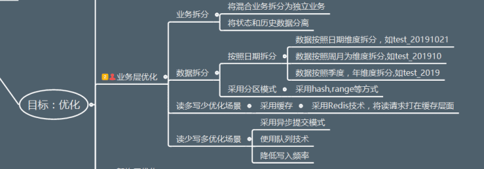
1）业务拆分
ü将混合业务拆分为独立业务
ü将状态和历史数据分离
业务拆分其实是把一个混合的业务剥离成为更加清晰的独立业务，这样业务1，业务2。。。独立的业务使得业务总量依旧很大，但是每个部分都是相对独立的，可靠性依然有保证。
对于状态和历史数据分离，我可以举一个例子来说明。
例如：我们有一张表Account，假设用户余额为100。
我们需要在发生数据变更后，能够追溯数据变更的历史信息，如果对账户更新状态数据，增加100的余额，这样余额为200。
这个过程可能对应一条update语句，一条insert语句。
对此我们可以改造为两个不同的数据源，account和account_hist
在account_hist中就会是两条insert记录，如下:
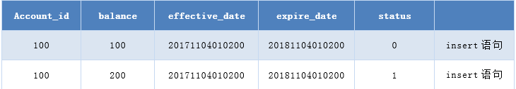
而在account中则是一条update语句，如下：
这也是一种很基础的冷热分离，可以大大减少维护的复杂度，提高业务响应效率。
2）数据拆分
2.1 按照日期拆分，这种使用方式比较普遍，尤其是按照日期维度的拆分，其实在程序层面的改动很小，但是扩展性方面的收益很大。
数据按照日期维度拆分，如test_20191021
数据按照周月为维度拆分,如test_201910
数据按照季度，年维度拆分,如test_2019
2.2 采用分区模式，分区模式也是常见的使用方式，采用hash,range等方式会多一些，在MySQL中我是不大建议使用分区表的使用方式，因为随着存储容量的增长，数据虽然做了垂直拆分，但是归根结底，数据其实难以实现水平扩展，在MySQL中是有更好的扩展方式。
2.3 读多写少优化场景
采用缓存，采用Redis技术，将读请求打在缓存层面，这样可以大大降低MySQL层面的热点数据查询压力。
2.4 读少写多优化场景，可以采用三步走：
1)采用异步提交模式，异步对于应用层来说最直观的就是性能的提升，产生最少的同步等待。
2)使用队列技术，大量的写请求可以通过队列的方式来进行扩展，实现批量的数据写入。
3)降低写入频率，这个比较难理解，我举个例子
对于业务数据，比如积分类，相比于金额来说业务优先级略低的场景，如果数据的更新过于频繁，可以适度调整数据更新的范围（比如从原来的每分钟调整为10分钟）来减少更新的频率。
例如：更新状态数据，积分为200，如下图所示
可以改造为，如下图所示。
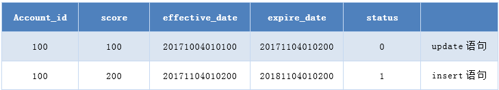
如果业务数据在短时间内更新过于频繁，比如1分钟更新100次，积分从100到10000，则可以根据时间频率批量提交。
例如：更新状态数据，积分为100，如下图所示。
无需生成100个事务（200条SQL语句）可以改造为2条SQL语句，如下图所示。
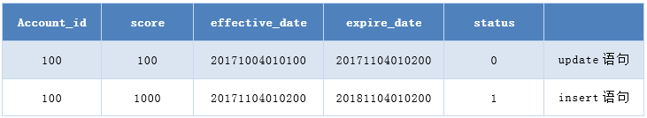
对于业务指标，比如更新频率细节信息，可以根据具体业务场景来讨论决定。
优化设计方案3：架构层优化
架构层优化其实就是我们认为的那种技术含量很高的工作，我们需要根据业务场景在架构层面引入一些新的花样来。
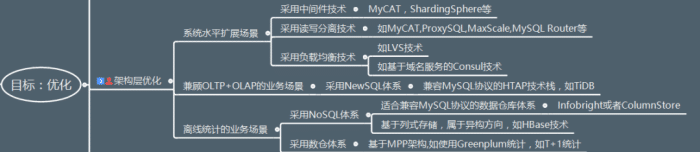
3.1.系统水平扩展场景
3.1.1采用中间件技术，可以实现数据路由，水平扩展，常见的中间件有MyCAT，ShardingSphere,ProxySQL等
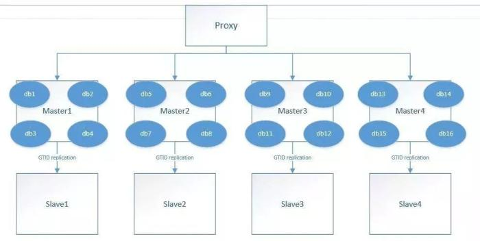
3.1.2 采用读写分离技术，这是针对读需求的扩展，更侧重于状态表，在允许一定延迟的情况下，可以采用多副本的模式实现读需求的水平扩展，也可以采用中间件来实现，如MyCAT,ProxySQL,MaxScale,MySQL Router等
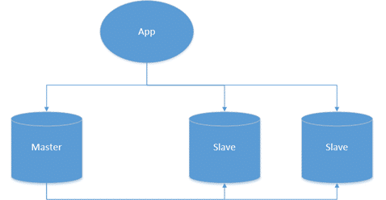
3.1.3 采用负载均衡技术，常见的有LVS技术或者基于域名服务的Consul技术等
3.2.兼顾OLTP+OLAP的业务场景，可以采用NewSQL，优先兼容MySQL协议的HTAP技术栈，如TiDB
3.3.离线统计的业务场景，有几类方案可供选择。
3.3.1 采用NoSQL体系，主要有两类，一类是适合兼容MySQL协议的数据仓库体系，常见的有Infobright或者ColumnStore，另外一类是基于列式存储，属于异构方向，如HBase技术
3.3.2采用数仓体系，基于MPP架构,如使用Greenplum统计，如T+1统计
优化设计方案4：数据库优化
数据库优化，其实可打的牌也不少，但是相对来说空间没有那么大了，我们来逐个说一下。
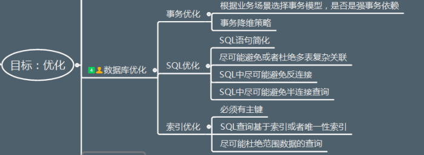
4.1 事务优化
根据业务场景选择事务模型，是否是强事务依赖
对于事务降维策略，我们来举出几个小例子来。
4.1.1 降维策略1：存储过程调用转换为透明的SQL调用
对于新业务而言，使用存储过程显然不是一个好主意，MySQL的存储过程和其他商业数据库相比，功能和性能都有待验证，而且在目前轻量化的业务处理中，存储过程的处理方式太“重”了。
有些应用架构看起来是按照分布式部署的，但在数据库层的调用方式是基于存储过程，因为存储过程封装了大量的逻辑，难以调试，而且移植性不高，这样业务逻辑和性能压力都在数据库层面了，使得数据库层很容易成为瓶颈，而且难以实现真正的分布式。
所以有一个明确的改进方向就是对于存储过程的改造，把它改造为SQL调用的方式，可以极大地提高业务的处理效率，在数据库的接口调用上足够简单而且清晰可控。
4.1.2 降维策略2：DDL操作转换为DML操作
有些业务经常会有一种紧急需求，总是需要给一个表添加字段，搞得DBA和业务同学都挺累，可以想象一个表有上百个字段，而且基本都是name1，name2……name100，这种设计本身就是有问题的，更不用考虑性能了。究其原因，是因为业务的需求动态变化，比如一个游戏装备有20个属性，可能过了一个月之后就增加到了40个属性，这样一来，所有的装备都有40个属性，不管用没用到，而且这种方式也存在诸多的冗余。
我们在设计规范里面也提到了一些设计的基本要素，在这些基础上需要补充的是，保持有限的字段，如果要实现这些功能的扩展，其实完全可以通过配置化的方式来实现，比如把一些动态添加的字段转换为一些配置信息。配置信息可以通过DML的方式进行修改和补充，对于数据入口也可以更加动态、易扩展。
4.1.3 降维策略3：Delete操作转换为高效操作
有些业务需要定期来清理一些周期性数据，比如表里的数据只保留一个月，那么超出时间范围的数据就要清理掉了，而如果表的量级比较大的情况下，这种Delete操作的代价实在太高，我们可以有两类解决方案来把Delete操作转换为更为高效的方式。
第一种是根据业务建立周期表，比如按照月表、周表、日表等维度来设计，这样数据的清理就是一个相对可控而且高效的方式了。
第二种方案是使用MySQL rename的操作方式，比如一张2千万的大表要清理99%的数据，那么需要保留的1%的数据我们可以很快根据条件过滤补录，实现“移形换位”。
4.2 SQL优化
其实相对来说需要的极简的设计，很多点都在规范设计里面了，如果遵守规范，八九不离十的问题都会杜绝掉，在此补充几点：
4.2.1 SQL语句简化，简化是SQL优化的一大利器，因为简单，所以优越。
4.2.2 尽可能避免或者杜绝多表复杂关联，大表关联是大表处理的噩梦，一旦打开了这个口子，越来越多的需求需要关联，性能优化就没有回头路了，更何况大表关联是MySQL的弱项，尽管Hash Join才推出，不要像掌握了绝对大杀器一样，在商业数据库中早就存在，问题照样层出不穷。
4.2.3 SQL中尽可能避免反连接，避免半连接，这是优化器做得薄弱的一方面，什么是反连接，半连接？其实比较好理解，举个例子，not in ,not exists就是反连接，in,exists就是半连接，在千万级大表中出现这种问题，性能是几个数量级的差异。
4.3 索引优化
应该是大表优化中需要把握的一个度。
4.3.1 首先必须有主键，规范设计中第一条就是，此处不接收反驳。
4.3.2 其次，SQL查询基于索引或者唯一性索引，使得查询模型尽可能简单。
4.3.3 最后，尽可能杜绝范围数据的查询，范围扫描在千万级大表情况下还是尽可能减少。
优化设计方案4：管理优化
这部分应该是在所有的解决方案中最容易被忽视的部分了，我放在最后，在此也向运维同事致敬，总是为很多认为本应该正常的问题尽职尽责（背锅）。
千万级大表的数据清理一般来说是比较耗时的，在此建议在设计中需要完善冷热数据分离的策略，可能听起来比较拗口，我来举一个例子，把大表的Drop 操作转换为可逆的DDL操作。
Drop操作是默认提交的，而且是不可逆的，在数据库操作中都是跑路的代名词，MySQL层面目前没有相应的Drop操作恢复功能，除非通过备份来恢复，但是我们可以考虑将Drop操作转换为一种可逆的DDL操作。
MySQL中默认每个表有一个对应的ibd文件，其实可以把Drop操作转换为一个rename操作，即把文件从testdb迁移到testdb_arch下面；从权限上来说，testdb_arch是业务不可见的，rename操作可以平滑的实现这个删除功能，如果在一定时间后确认可以清理，则数据清理对于已有的业务流程是不可见的，如下图所示。
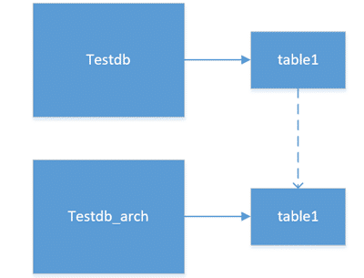
此外，还有两个额外建议，一个是对于大表变更，尽可能考虑低峰时段的在线变更，比如使用pt-osc工具或者是维护时段的变更，就不再赘述了。
最后总结一下，其实就是一句话：
千万级大表的优化是根据业务场景，以成本为代价进行优化的，绝对不是孤立的一个层面的优化。
点在看，让更多人看到